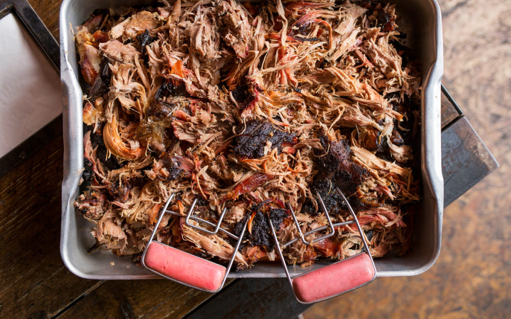

North Carolina Pulled Pork

Description
Pork shoulder cooked smoky as a fireplace, succulent as a biscuit dipped in bacon fat, and tender enough to pull apart with your fingers — such is North Carolina barbecue. As the name suggests, the traditional way to serve the pork is to pull it into shreds with your fingers. That’s where a thin vinegar sauce comes in, because a Kansas City sauce would be too thick to be absorbed by the slender shreds of meat.
Ingredients
- 1 Boston butt (5 pounds; also know as bone-in pork shoulder roast)
- 1 tablespoon coarse salt (kosher or sea)
- 1 tablespoon freshly ground black pepper
- 1 tablespoon paprika
- Pig Picker Pucker Sauce (see step 5, below)
- 6 cups shredded cabbage
- 10 to 12 hamburger buns, split
Steps
- Generously season the pork all over with salt, pepper, and paprika.
- Set up the grill for indirect cooking, and preheat to 325 degrees F.
- Place the pork shoulder, skin side up, on the grate over the drip pan. If using a charcoal grill, toss a quarter of the wood chips on the coals. If using a gas grill, place the chips in the smoker box. Don’t grill until you see smoke. Cover the grill.
- Smoke-cook the pork should until fall-off-the-bone tender with an internal temperature of 195 degrees F, 4 to 5 hours. If using charcoal, add 10 fresh coals and 1 cup wood chips per side every hour.
- Transfer the cooked pork roast to a cutting board, tent with aluminum foil, and let rest for 15 minutes. Pull off and discard any skin. Pull the pork into pieces, discarding any bones or fat. You may wish to wear heavy-duty rubber gloves for pulling. Using your fingertips or a fork, pull each piece of pork into thin shreds. Or use a cleaver and cutting board to finely chop it. Transfer the pork to a large foil pan and stir in 1 to 1 1/2 cups Pig Picker Pucker Sauce, enough to keep the pork moist. Cover the pan with foil and place on the grill to keep warm.
- Place the cabbage in a large bowl, add 1/2 to 3/4 cup of the remaining sauce, and toss to mix.
- To serve, pile the pork and cabbage on the hamburger buns, and spooning on additional sauce if desired.